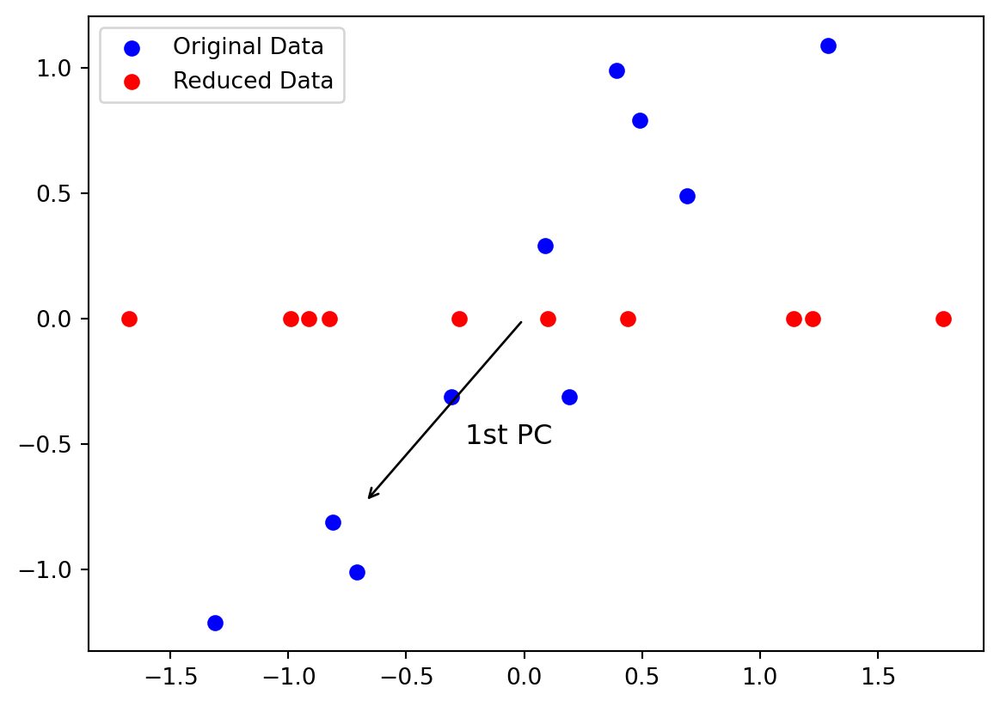
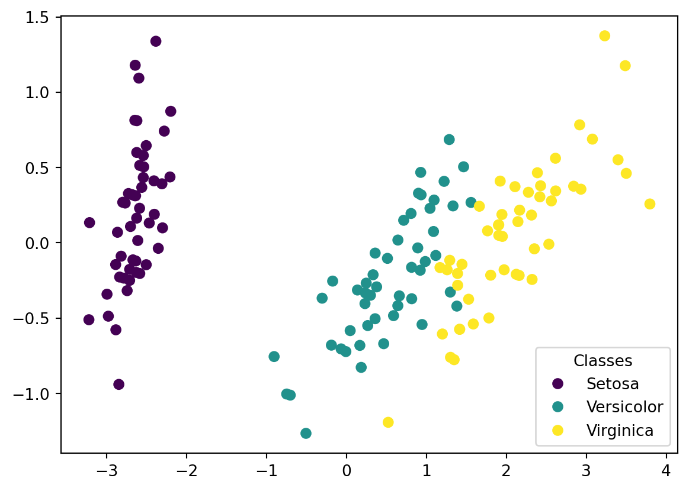
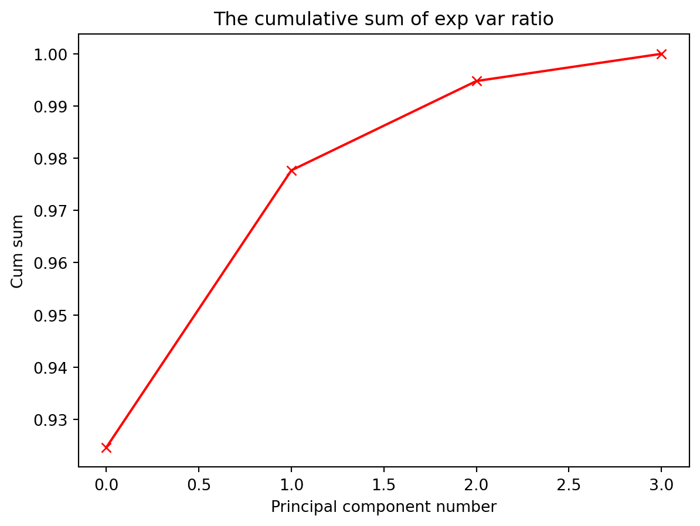
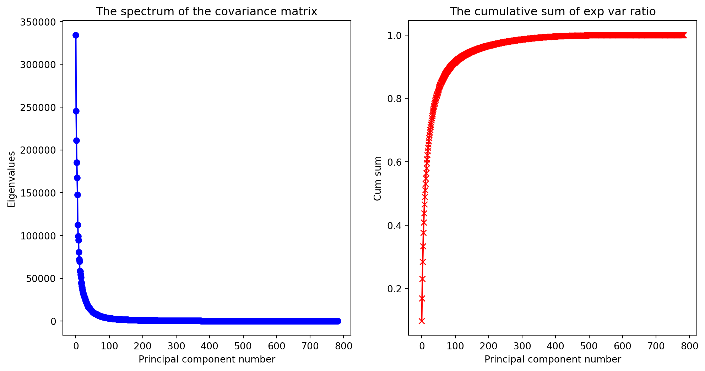
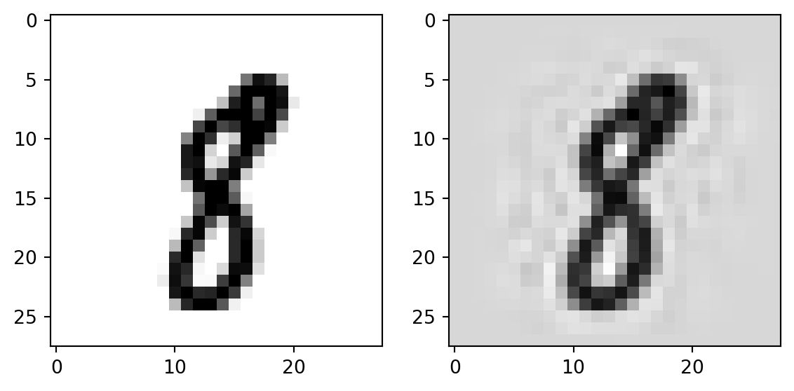
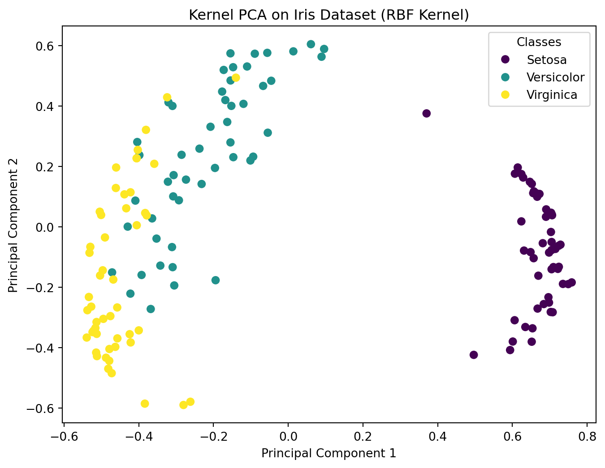
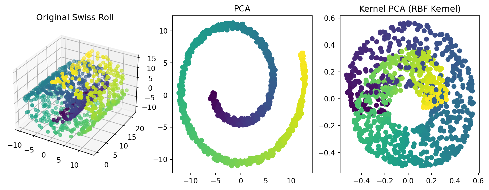

In an age of data explosion, we often see data in high dimensions. High-dimensional data can be very complex, making it challenging to analyze and interpret. As the number of dimensions increases, it becomes more difficult to recognize patterns and the performance of machine learning algorithms is seriously affected. This is the so-called Curse of Dimensionality. In addition, high-dimensional data is challenging for visualization. As a result, dimensionality reduction, which involves reducing the number of features while retaining as much relevant information as possible, is a crucial step in machine learning. We will introduce a few of them, including principal component analysis, incremental principal component analysis, and kernel principal component analysis.
4.1 Principal Component Analysis (PCA)
Principal component analysis (PCA) transforms data of a higher dimension to a new coordinate system with a lower dimension. During the transformation, the variance of the data, which can be considered as the information the data contain, is conserved as much as possible. The core of the algorithm is an eigendecomposition of the covariance matrix constructed with the mean-removed/centered data, leading to a set of eigenvectors, called principal components, and eigenvalues, which provides important information on the dimension of the reduced coordinates.
Suppose we have a set of data points/observations \(\{\boldsymbol{x}_1, \boldsymbol{x}_2, \dots, \boldsymbol{x}_N\}\), and each data point is \(d\)-dimensional, i.e., $_i=(x_i^1, x_i^2, , x_id)T $. Combining all the data points into a data matrix \(X\),
Compute the mean of each feature, \(\bar{x}^i = \frac{1}{N}\sum_{j=1}^Nx_{j}^i\), \(1\le i\le d\). Subtracting the mean feature from each feature in the data matrix \(X\), i.e. each \(x_{i}^j\) element in \(X\) is replaced by \(x_i^j-\bar{x}^j\), we obtain the centered data matrix \(X_c\). The covariance matrix of \(X_c\) can be computed as
\[\begin{equation*}
C = \frac{1}{N}X_c^T X_c
\end{equation*}\]
Performing an eigenvalue decomposition on the covariance matrix, we obtain a set of eigenvalues \(\{\lambda_1,\dots,\lambda_d\}\), and a set of \(d\)-dimensional normalized (unit) eigenvectors \(\{\boldsymbol{u}_1, \boldsymbol{u}_2, \dots, \boldsymbol{u}_d\}\). The eigenvectors are called principal components. These are the directions in the \(d\)-dimensional space the original data points \(\boldsymbol{x}_i\)’s will be projected to in order to get a new set of coordinates. Supposing we only keep a small set of the eigenvalues, \(\{\lambda_1,\dots,\lambda_m\}\), and eigenvectors, \(\{\boldsymbol{u}_1, \boldsymbol{u}_2, \dots, \boldsymbol{u}_m\}\), \(m\ll d\), then the projected data will have a much smaller dimension \(m\). Let \(X_r\) be the dimension-reduced data. Then
Now we will see why the algorithm works, i.e. why the algorithm guarantees that the maximum variance is retained for any chosen \(m\), \(1\le m\le d\).
Let \(\boldsymbol{v}_1\) be a unit vector in the \(d\)-dimensional space, and it is the vector such that when all the data points are projected to it, the resulting 1-dimensional transformed data points has the largest variance. We want to show \(\boldsymbol{v}_1=\boldsymbol{u}_1\), the normalized eigenvector of \(C\) corresponding to the largest eigenvalue. To see this, we can compute the mean of the transformed (reduced) data points by:
where \(\bar{\boldsymbol{x}}\) is the mean vector of all the data points (row mean of data matrix \(X\)). Based on the mean, we can compute the variance of the reduced coordinates as (see Exercise 8-1):
where \(C\) is the data covariance matrix defined before
\[\begin{equation*}
C = \frac{1}{N}X_c^T X_c = \frac{1}{N}\sum_{i=1}^N (\boldsymbol{x}_i-\bar{\boldsymbol{x}}) (\boldsymbol{x}_i-\bar{\boldsymbol{x}})^T
\end{equation*}\]
Our goal is to maximize \(\boldsymbol{v}_1^TC\boldsymbol{v}_1\), with the constraint that \(\boldsymbol{v}_1^T\boldsymbol{v}_1=1\). Using Lagrange multiplier, we can obtain the following equivalent problem:
which shows that \(\boldsymbol{v}_1\) is an eigenvector of \(C\) corresponding to the eigenvalue \(\lambda\). Left multiplying both sides of the previous equation by \(\boldsymbol{v}_1^T\), we have
Since \(\boldsymbol{v}_1^TC\boldsymbol{v}_1\) is the largest, \(\lambda\) must be equal to \(\lambda_1\), the largest eigenvalue of \(C\). Therefore, we have \(\boldsymbol{v}_1=\boldsymbol{u}_1\), the eigenvector corresponding to the largest eigenvalue, also called the first principal component.
Using a mathematical induction, we can show the variance of the \(m\)-dimensional projected data points is the largest when we use the first \(m\) eigenvectors corresponding to the largest \(m\) eigenvalues of \(C\).
We consider a simple 2D data that can be transformed to 1D without losing much variance. We use Python to transform the data and show how sklearn can be used to perform PCA.
import numpy as npimport matplotlib.pyplot as pltfrom sklearn.decomposition import PCA# Synthetic 2D data that is very linearX = np.array([[2.5, 2.4], [0.5, 0.7], [2.2, 2.9], [1.9, 2.2], [3.1, 3.0], [2.3, 2.7], [2, 1.6], [1, 1.1], [1.5, 1.6], [1.1, 0.9]])# mean removalX_c = X - np.mean(X, axis=0)# Perform PCA, m=1, i.e. only use the first principal componentpca = PCA(n_components=1)X_r = pca.fit_transform(X_c)# Explained variance, i.e. \lambda_1/(\lambda_1+\lambda_2)# This is also the proportion of variance that is retained.explained_variance = pca.explained_variance_ratio_# This is the first principal componentprint("Principal Components:\n", pca.components_)print("Explained Variance Ratio:", explained_variance)# Plot original and reduced dataplt.scatter(X_c[:, 0], X_c[:, 1], color='blue', label='Original Data')plt.scatter(X_r[:, 0], np.zeros(X_r.shape), color='red', label='Reduced Data')# Plot an arrow that shows the principal component directionplt.annotate('', xy=pca.components_[0], xytext=(0,0), arrowprops=dict(facecolor='black', arrowstyle='->'))plt.text(-0.25, -0.5, '1st PC', fontsize=12, color='k')plt.legend()plt.show()
Principal Components:
[[-0.6778734 -0.73517866]]
Explained Variance Ratio: [0.96318131]

Example 8-2
Visualize the iris dataset after transforming the data to 2D using PCA.
from sklearn.datasets import load_iris# Load the Iris datasetiris = load_iris()X = iris.data # 4D featuresy = iris.target# Perform PCA to reduce the data from 4D to 2Dpca = PCA(n_components=2)X_r = pca.fit_transform(X)scatter = plt.scatter(X_r[:, 0], X_r[:, 1], c=y)# Create a custom legendhandles, labels = scatter.legend_elements(prop="colors")legend_labels = ['Setosa', 'Versicolor', 'Virginica']plt.legend(handles, legend_labels, title="Classes");

4.2 Choosing \(m\)
A common way to guide the choice of \(m\) is to use the “cumulative explained variance ratio”. Suppose \(\tilde{m}\) principal components are used (hence the reduced data has dimension \(\tilde{m}\)), then the cumulative explained variance ratio is defined as the sum of the first \(\tilde{m}\) largest eigenvalues divided by the sum of all the eigenvalues. This is an indicator of what percentage of variance is retained after transforming the data to a smaller dimension. For a preset threshold, say 90%, we will choose the number of components where the cumulative explained variance ratio first reaches the threshold to be \(m\).
We go back to the previous iris data set example to illustrate the process.
# Still for the Iris dataset# Here we build a PCA without specifying the number of components# The covariance matrix will be 4 by 4 now# there will be 4 principal components, and hence 4 eigenvaluespca = PCA()pca.fit(X)# Show the eigenvalues of the covariance matrixprint('The eigenvalues are: ', pca.explained_variance_)
The eigenvalues are: [4.22824171 0.24267075 0.0782095 0.02383509]
# Plot the spectrum of the covariance matrixplt.plot(pca.explained_variance_, 'bo-')plt.xlabel('Principal component number')plt.ylabel('Eigenvalues')plt.title('The spectrum of the covariance matrix');
# Plot the cumulative explained variance ratioplt.plot(cumsum, 'rx-')plt.xlabel('Principal component number')plt.ylabel('Cum sum')plt.title('The cumulative sum of exp var ratio');

For example, if our threshold is chosen to be \(95\%\), we would need \(m=2\), i.e., when the 4D data points are transformed to 2D with PCA, less than \(5\%\) of the variance is lost. The following line of code will do this automatically:
d = np.argmax(cumsum >=0.95) +1print('To retain at least 95% of variance, m should be ', d)
To retain at least 95% of variance, m should be 2
Example 8-3
We consider an application of PCA to the MNIST dataset.
from sklearn.datasets import fetch_openml# Load the MNIST datasetmnist = fetch_openml('mnist_784', version=1, as_frame=False)# Feature matrix:X = mnist['data']# Target vector:y = mnist['target']print('The shape of X is: ', X.shape)print('The shape of y is: ', y.shape)
The shape of X is: (70000, 784)
The shape of y is: (70000,)
# Perform PCA and determine the m that gives us at least 95% variancepca = PCA()pca.fit(X)cumsum = np.cumsum(pca.explained_variance_ratio_)d = np.argmax(cumsum >=0.95) +1print('To retain at least 95% of variance, m should be ', d)
To retain at least 95% of variance, m should be 154
plt.figure(figsize=(12, 6))plt.subplot(1,2,1)# Plot the spectrum of the covariance matrixplt.plot(pca.explained_variance_, 'bo-')plt.xlabel('Principal component number')plt.ylabel('Eigenvalues')plt.title('The spectrum of the covariance matrix');plt.subplot(1,2,2)# Plot the cumulative sum of the explained variance ratioplt.plot(cumsum, 'rx-')plt.xlabel('Principal component number')plt.ylabel('Cum sum')plt.title('The cumulative sum of exp var ratio');

# First compress the data to 154 dimensionspca = PCA(n_components=154)X_reduced = pca.fit_transform(X)# Reconstruct the data back to 784 dimension.X_recovered = pca.inverse_transform(X_reduced)print('Shape of the reconstructed data: ', X_recovered.shape)
Shape of the reconstructed data: (70000, 784)
import matplotlib as mpl# Take an arbitray instance of the original data for plottingplt.subplot(1,2,1)digit = X[300, :]digit_image = digit.reshape(28,28)plt.imshow(digit_image, cmap = mpl.cm.binary);# Take an arbitray instance of the recovered data for plottingplt.subplot(1,2,2)digit = X_recovered[300, :]digit_image = digit.reshape(28,28)plt.imshow(digit_image, cmap = mpl.cm.binary);

The two figures, original and reconstructed, are very similar.
4.3 Incremental Principal Component Analysis (IPCA)
When a dataset is large, PCA can be very inefficient, due to the fact that the algorithm requires that all data have to be used at once. In some cases, data come in batches, and we would like the algorithm can handle incremental data, instead of repeating the training on all the data that are currently available. Incremental Principal Component Analysis (IPCA) is a variant of PCA that can handle data in smaller chunks. To achieve this, IPCA iteratively updates the data mean, covariance matrix, and the eigenvalues and eigenvectors through an incremental singular value decomposition (SVD) procedure, as new data arrive.
We use the following example to illustrate how IPCA can be implemented in Python
Example 8-4
Revisit the MNIST data using IPCA.
from sklearn.decomposition import IncrementalPCA# Load the MNIST datasetmnist = fetch_openml('mnist_784', version=1, as_frame=False)# Feature matrix:X = mnist['data']# Define the number of principal componentsn_components =50# Initialize IncrementalPCAipca = IncrementalPCA(n_components=n_components)# Simulate batch processingbatch_size =1000n_batches = X.shape[0] // batch_size# Process data in batchesfor batch_idx inrange(n_batches): X_batch = X[batch_idx * batch_size:(batch_idx +1) * batch_size] ipca.partial_fit(X_batch)# Transform the data using the fitted IncrementalPCAX_ipca = ipca.transform(X)# Print the cumulative explained variance ratioprint(f'Cumulative explained variance ratio by component: {np.cumsum(ipca.explained_variance_ratio_)}')
PCA is effective for data whose features show a linear relationship. For a high-dimensional non-linear feature space (think about spirals or concentric circles), PCA may not perform well (\(m\) could be close to \(d\)). For non-linear feature space, we may use the idea illustrated in the discussion of kernelized SVM, where we use kernels to implicitly project linearly inseparable data to a higher-dimensional (can be infinitely dimensional) space where they become linearly separable. Similarly, we can borrow the idea and use a kernel to implicitly project a nonlinear feature space to a higher-dimensional one, which hopefully are more linear. We now introduce the main mathematics behind KPCA, which is very similar to that of PCA.
Suppose the implicitly defined mapping from the original feature space (\(d\)-dimensional) to a higher-dimensional (\(D\)-dimensional, \(d\ll D\)) one is \(\boldsymbol{\phi}(\boldsymbol{x})\). Then in the higher-dimensional space, the data points become \(\{\boldsymbol{\phi}(\boldsymbol{x}_1), \boldsymbol{\phi}(\boldsymbol{x}_2), \dots, \boldsymbol{\phi}(\boldsymbol{x}_N)\}\). We will then build a data matrix each row of which represents a data points, and then build a covariance matrix \(C\) (assuming the features have a mean of \(0\) for now):
\[\begin{equation*}
C = \frac{1}{N} \sum_{i=1}^N \boldsymbol{\phi}(\boldsymbol{x}_i) \boldsymbol{\phi}(\boldsymbol{x}_i)^T
\end{equation*}\]
Based on the covariance matrix, we find its eigendecomposition:
\[\begin{equation*}
C \boldsymbol{v}_i = \lambda_i\boldsymbol{v}_i
\end{equation*}\]
If we directly work in the \(D\)-dimensional feature space, this will be computationally intractable. We will find a way to use the kernel, which computes the inner product in the higher-dimensional space by working in the original space. Note that the previous equation can be rewritten as
\[\begin{equation*}
\frac{1}{N} \sum_{i=1}^N \boldsymbol{\phi}(\boldsymbol{x}_i) \left(\boldsymbol{\phi}(\boldsymbol{x}_i)^T \boldsymbol{v}_i\right) = \lambda_i\boldsymbol{v}_i
\end{equation*}\] by a substitution of \(C\). if \(\lambda_i>0\) for all \(i\), then we can write the eigenvectors as a linear combination of the features:
where \(k\) is the kernel function. In matrix notation, this can be written as (see Exercise 8-3)
\[\begin{equation*}
K^2\boldsymbol{a}_i = \lambda_i N K \boldsymbol{a}_i
\end{equation*}\] where \(\boldsymbol{a}_i = (a_{i1}, a_{i2}, \dots, a_{iN})\) and \(K\) is the kernel matrix. The solutions of which can be obtained by solving
\[\begin{equation*}
K\boldsymbol{a}_i = \lambda_i N \boldsymbol{a}_i
\end{equation*}\]
(The solutions are not exactly the same, but they are the same corresponding to non-zero eigenvalues, which is enough). Here, we have a different normalization condition for \(\boldsymbol{a}_i\) (not \(\boldsymbol{a}_i^T\boldsymbol{a}_i=1\)). Note that
\[\begin{equation*}
\lambda_i N \boldsymbol{a}_i^T\boldsymbol{a}_i = \boldsymbol{a}_i^T \lambda_i N \boldsymbol{a}_i = \boldsymbol{a}_i^TK\boldsymbol{a}_i = \sum_{n=1}^N\sum_{m=1}^N a_{in}a_{im} \boldsymbol{\phi}(\boldsymbol{x}_n)^T\boldsymbol{\phi}(\boldsymbol{x}_m) = \boldsymbol{v}_i^T\boldsymbol{v}_i = 1
\end{equation*}\] Hence we have the normalization condition for \(\boldsymbol{a}_i\):
We can then project the original data \(\boldsymbol{x}_i\) onto the principal components in the higher-dimensional feature space to obtain the reduced-dimensional representation by:
In the above discussion, we assumed the projected features have zero means, which is not the case in general. To take this into account, let \(\bar{\boldsymbol{\phi}}(\boldsymbol{x}_i)\) be the mean-removed feature, which is obtained by
After some algebra, it can shown that (see Exercise 8-4)
\[\begin{equation*}
\bar{K} = K -\boldsymbol{1}_N K - K \boldsymbol{1}_N + \boldsymbol{1}_N K \boldsymbol{1}_N
\end{equation*}\] where \(\boldsymbol{1}_N\) is a \(N\times N\) matrix whose entries are all \(1/N\)
The shape of the new coordinates are very similar to the original ones.
Example 8-6
Perform KPCA for the iris dataset to reduce the dimensions of the feature space to \(2\).
from sklearn.preprocessing import StandardScaler# Load the Iris datasetiris = load_iris()X = iris.datay = iris.targettarget_names = iris.target_names# Standardize the datascaler = StandardScaler()X_scaled = scaler.fit_transform(X)# Apply Kernel PCA with RBF kernelkpca = KernelPCA(n_components=2, kernel='rbf', gamma=0.1)X_kpca = kpca.fit_transform(X_scaled)# Plot the results of Kernel PCAplt.figure(figsize=(8, 6))scatter = plt.scatter(X_kpca[:, 0], X_kpca[:, 1], c=y)# Create a custom legendhandles, labels = scatter.legend_elements(prop="colors")legend_labels = ['Setosa', 'Versicolor', 'Virginica']plt.legend(handles, legend_labels, title="Classes");plt.title('Kernel PCA on Iris Dataset (RBF Kernel)')plt.xlabel('Principal Component 1')plt.ylabel('Principal Component 2')plt.show()

Example 8-7
Apply and compare PCA and KPCA applied to the Swiss Roll Dataset.
from sklearn.datasets import make_swiss_roll# Generate the Swiss roll datasetX, color = make_swiss_roll(n_samples=1000, noise=0.2, random_state=24)# Apply standard PCApca = PCA(n_components=2)X_pca = pca.fit_transform(X)# Apply Kernel PCA with RBF kernelkpca = KernelPCA(n_components=2, kernel='rbf', gamma=0.02)X_kpca = kpca.fit_transform(X)# Plot the original Swiss roll in 3Dfig = plt.figure(figsize=(12, 4))ax = fig.add_subplot(131, projection='3d')ax.scatter(X[:, 0], X[:, 1], X[:, 2], c=color)ax.set_title("Original Swiss Roll")# Plot the results of standard PCAax = fig.add_subplot(132)plt.scatter(X_pca[:, 0], X_pca[:, 1], c=color)plt.title("PCA")# Plot the results of Kernel PCAax = fig.add_subplot(133)plt.scatter(X_kpca[:, 0], X_kpca[:, 1], c=color)plt.title("Kernel PCA (RBF Kernel)")plt.show()

The 2D projection from standard PCA flattens the Swiss roll, but it does not effectively capture the underlying spiral structure. Points that were far apart on the roll may end up close together in the 2D projection. On the other hand, Kernel PCA successfully unrolls the Swiss roll, revealing a structure that better preserves the original relationships between points. The colors (representing positions along the roll) form a smooth gradient, indicating that the non-linear structure has been effectively captured.